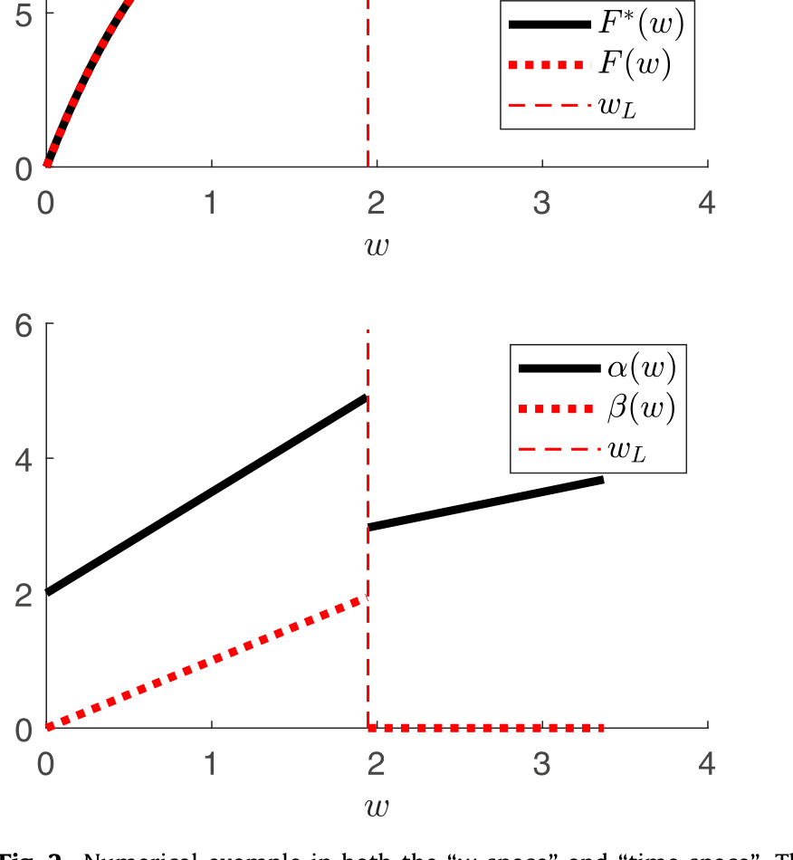
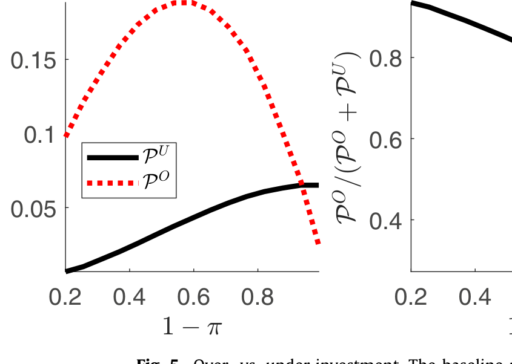
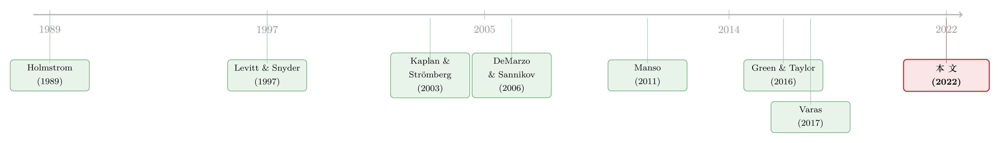

为什么最优的合约，一开始反而要「纵容」失败？
本文读的是 Mayer (2022, Journal of Financial Economics)：在一个连续时间的委托—代理模型里，出资人看不到项目何时「失败」，而开发项目的代理人可以把失败藏起来。要让代理人主动「坦白」失败，合约就必须奖励失败；但一旦奖励失败，代理人又会忍不住「假装失败」去骗这笔钱。论文证明，化解这对张力的最优合约，会在前期故意不奖励失败、也不索要坦白（一段「宽限期」，期间甚至会继续给已经失败的项目烧钱），到了后期才进入一个奖励逐渐递减的「披露阶段」。融资因此变得越来越对业绩敏感，代理人的激励被后置——这恰好解释了风险投资合约里一连串看似古怪的经验规律。
1 从 Theranos 说起
先讲一个所有人都听过的故事。2003 年成立的 Theranos，靠一项「一滴血验百病」的新型血检技术从风投和私人投资者手里融到了巨额资金。问题在于：2014 到 2018 年间，这项技术其实已经失败了。但公司没有把失败说出口，反而继续发布虚假的进展、继续融资，直到 2018 年这座由谎言堆起来的金字塔轰然倒塌。
事后复盘，人们总爱把矛头指向投资者「尽职调查不力」。但 Theranos 真正暴露的，是为创新项目融资时一个绕不开的结构性难题：创新项目天生 i) 失败风险极高，ii) 极度依赖内部人的专业判断，iii) 又必须从看不懂技术细节的外部投资者那里要钱。出资人想把钱和项目的成败绑在一起——失败了就该止损、断供——可一旦出资人看不清项目进展，开发者就有能力把坏结果藏起来，继续把项目（和融资）拖下去。
于是一个自然的问题是：既然出资人希望代理人主动披露失败，那为什么不在合约里直接重金悬赏「谁坦白失败，就奖励谁」？
这篇论文的回答出人意料：最优的合约，恰恰在一开始选择不去奖励失败、也不索要坦白。 它甚至会眼睁睁看着一个已经失败的项目继续拿钱。要理解这个反直觉的结论，我们得先把那对核心张力拆开来看。
2 一对解不开的张力：坦白 vs. 开发
把直觉先放在最前面。出资人面对的，其实是同一笔「失败赏金」的两副面孔。
第一副面孔——为了让人坦白，你必须奖励失败。 代理人私下知道项目已经死了。你希望他立刻举手说「它失败了」，好让你及时止损。可如果坦白没有任何好处，他凭什么坦白？藏着不说，他还能继续操作这个项目、继续领取私人好处（论文里记作 \(\varphi\)）。所以要诱导坦白，合约必须给「自报失败」一笔支付 \(\beta_t\)。而且——这是第一个关键——这笔奖励必须随时间递减。否则，如果明天的失败赏金比今天还高，代理人就会故意拖延，把坏消息捂到赏金最高的那一刻才放出来。
第二副面孔——一旦奖励失败，你就在鼓励人「制造」失败。 既然自报失败能拿钱，那一个项目其实还没失败的代理人就会动歪脑筋：与其辛辛苦苦继续开发、赌一个不确定的成功，不如现在就「假报失败」（fake failure），把 \(\beta_t\) 这笔钱先揣进兜里、提前退出。要堵住这条路，出资人只能反过来把「成功」的奖励 \(\alpha_t\) 抬得更高，让代理人觉得「继续干、赌成功」比「假装失败、领赏金」更划算。可成功奖励一抬高，就产生了过度的代理租金（agency rents）。
注意这两副面孔的对立：为了「坦白」要奖励失败，为了「开发」又要惩罚（抑制）失败。激励披露与激励开发，天然打架。 论文的全部精彩，都是围绕这一对张力展开的。
于是出资人陷入一个清晰的取舍：一方面，给失败的项目继续烧钱是低效的，他理想中希望代理人坦白、自己及时止损；另一方面，诱导坦白要付出过度租金的代价。当后者的代价足够大时，最优的选择竟是「暂时不要坦白」。
3 模型设定：一步步把张力写进数学
这是一篇纯理论论文，值得把骨架搭清楚。
时间与参与人。 时间 \(t\) 连续，定义在 \([0,\infty)\)。一个出资人（she）为一个由代理人（he）开发的项目融资。代理人受有限责任（limited liability）约束、初始财富为零；出资人财力雄厚、可以完全承诺（full commitment）任意长期合约、并握有全部议价权。双方都风险中性、不贴现、外部选择权为零。
项目的生与死。 开发项目每单位时间需要出资人投入资金 \(\kappa>0\)。出资人可以在一个内生的时刻 \(T_0\) 终止融资。项目的完成时刻 \(\tau\) 不确定，由一个强度为 \(\lambda\) 的泊松过程（Poisson process）\(N_t\) 驱动——只要还在融资（\(t\le T_0\)），项目就以强度 \(\lambda\) 随机「完成」，预期完成时间为 \(1/\lambda\)。而完成会通向两种结局：成功或失败。
把这件事放到一个极短的区间 \([t,t+dt)\) 上看，三种事件的概率是：
$$ \Pr(\text{success}) = a_t\,p\,\lambda\,dt,\qquad \Pr(\text{failure}) = (1 - a_t\,p)\,\lambda\,dt,\qquad \Pr(\text{no completion}) = 1 - \lambda\,dt $$
这里 \(a_t\in\{0,1\}\) 是代理人的努力，\(p\in(0,1)\) 是外生的成功概率。关键在于：努力只影响「完成时是成功还是失败」，不影响「何时完成」。 努力（\(a_t=1\)）时，完成有概率 \(p\) 成功；偷懒（\(a_t=0\)）时，成功概率塌缩为零——完成必定是失败，但代理人能享受偷懒的私人好处 \(\varphi\)。
{kind=link}
Figure 1: Heuristic timing over [t t dt . The branches of the tree
无摩擦、努力无成本的世界里，项目的净现值（net present value, NPV）为正：
$$ \text{NPV} = p\mu - \frac{\kappa}{\lambda} > 0 $$
其中 \(\mu\) 是成功时付给出资人的终端收益。也就是说，第一最优（first best）是把项目一直融资到完成。所有的低效，都来自下面两道摩擦。
摩擦一：失败难以观测。 项目一旦失败，失败以概率 \(\pi\in[0,1]\) 被公开观测到（出资人也看得见，可写进合约）；以概率 \(1-\pi\) 只有代理人私下知道、出资人既看不见也无法核实。本文的核心情形是 \(\pi\in(0,1)\)。成功则不同——成功永远是公开、可验证、可签约的。这背后的现实直觉是：人更容易藏住坏消息、却很难伪造好消息。于是代理人可以「藏失败」（hide）或「假报失败」（fake），却无法假造成功。
摩擦二：努力不可观测。 \(a_t\) 出资人看不到，偷懒带来私人好处 \((1-a_t)\varphi\)，构成道德风险（moral hazard）。论文假设 \(0\le\varphi<\kappa\)，即偷懒在社会意义上是低效的。
合约。 出资人设计一份合约 \(C\)，规定累积支付与一个截止期 \(T\)，融资在 \(T_0=T\wedge\tau_A\) 终止（\(\tau_A\) 是代理人「上报完成」的时刻）。瞬时支付写成三项：
代理人若如实行事，成功或公开失败都有 \(\tau_A=\tau\)；\(\tau_A>\tau\) 是藏失败，\(\tau_A<\tau\) 是假报失败。论文聚焦于诱导全程努力（\(a_t=1\)）的合约。
两道激励约束。 把上面的概率代进代理人的最优化，可以推出两条核心约束。
其一，努力约束。在 \([t,t+dt)\) 上，努力的预期所得要不低于偷懒（拿 \(\varphi\,dt\) 的私人好处、但完成必为失败）的所得，整理后得到：
$$ \alpha_t - \beta_t \;\ge\; \frac{\varphi}{\lambda\,p} $$
这就是教科书式的「按业绩付薪」：成功与失败之间必须拉开足够的支付差距，否则代理人会偷懒。
其二，披露约束。一个私下已知失败的代理人，比较「现在坦白拿 \(\beta_t\)」与「再藏一会儿、多领 \(\varphi\,dt\) 的私人好处、之后再拿 \(\beta_{t+dt}\)」。要让他选择立刻坦白，必须有 \(\beta_t \ge \varphi\,dt+\beta_{t+dt}\)，即
$$ -\,\dot\beta_t \;\ge\; \varphi $$
失败赏金必须以不低于 \(\varphi\) 的速度递减。 这正是第 2 节那句「奖励必须随时间下降」的数学版本。
4 反转：最优合约里的「宽限期」
现在把两条约束摆在一起，反转就出现了。
要诱导披露，你得设一笔正的、且递减的 \(\beta_t\)。可只要 \(\beta_t>0\)，假报失败的诱惑就出现了——为了压住它，你得抬高 \(\alpha_t\)，代价是过度的成功奖励与代理租金。当 \(\beta_t\) 越高，这套租金代价越重。 那么在合约的某些时段，干脆把 \(\beta_t\) 压到零、彻底放弃索要坦白，反而更省钱。
于是论文证明：最优合约由两个泾渭分明的阶段拼成。
(一) 无条件融资阶段（unconditional financing stage）。 这是一段「宽限期」或「试用期」。在这里出资人不奖励失败（\(\beta_t=0\)），不索要坦白——因此项目即便已经失败，也可能被「蒙在鼓里」地继续融资。代理人在这一阶段 i) 不为失败领钱，ii) 只拿很低的成功奖励，iii) 因为成功奖励随时间下降，还要为（自己控制不了的）拖延承受轻微惩罚。这一阶段以一个软截止期（soft deadline）收尾：到点了，出资人向代理人索取一次「项目到现在为止有没有失败」的如实进度报告。
(二) 披露阶段（disclosure stage）。 只有当进度报告显示「项目尚未失败」，出资人才会续上下一阶段的钱。进入披露阶段后，出资人开始用那笔随时间递减的失败赏金 \(\beta_t\) 诱导坦白，并把融资一直续到「报告完成」或「碰到硬截止期（hard deadline）」为止。此时失败立即触发断供，融资变得高度业绩敏感；代理人领取高而递减的成功/失败奖励，对拖延则施以严厉惩罚（包括终止合约的威胁）。硬截止期是无条件的——到点就停，哪怕项目其实还值得做下去。

Figure 2: Numerical example in both the “w -space”and “time space”
把两阶段连起来看，一幅完整的图景浮现出来：
- 对失败的容忍通过两种方式实现——前期的「不追究」（宽限期）和后期的「为失败付费」。
- 融资的业绩敏感度随时间、随阶段单调上升：从前期的「无条件给钱」到后期的「失败即断供」。
- 代理人的激励被后置（backloaded）：越往后，激励越强。
5 它解释了风投合约里一连串「怪现象」
理论的说服力，在于它能不能对上现实。把出资人读作风险投资人（VC）、代理人读作创业者，模型一口气解释了好几条经验规律：
- 为什么 VC 投资的初创公司，早年很少被判「死刑」？ 因为最优合约前期就是一段无条件融资的宽限期，不逼着创业者宣告失败——这正对应 Puri 和 Zarutskie (2012) 记录的「VC 支持的企业在早期被终止的概率偏低」。
- 为什么创业者的激励是后置的？ VC 合约普遍带有股权兑现条款（vesting），与「激励后置」一致（Kaplan 和 Strömberg, 2003）。而既然激励能提高成功概率，后置激励就意味着成功概率应随时间、随轮次上升——这也被 Puri 和 Zarutskie (2012) 证实。
- 为什么「为失败付费」（清算权、出售给收购方的低额回报）只出现在后期？ Kaplan 和 Strömberg (2003) 发现，正是在后期融资轮里，创始人更可能拥有清算权或优先于 VC 累计投资的权益。
- 为什么 VC 的下行保护随时间增强？ 失败赏金递减，意味着 VC 在失败时的剩余回报上升——对上了 Bengtsson 和 Sensoy (2011)。
- 「失败容忍度」为什么与创新正相关？ 无条件融资阶段的相对长度，恰好量化了 Tian 和 Wang (2014) 所说的「VC 对失败的容忍」。论文给出一个基于代理冲突的解释：正是当代理冲突最严重时（比如最具创新性的项目），出资人越不该去索要坦白，因而宽限期越长。
最妙的一个推论是关于「喷洒与祈祷」（spray and pray）的：对那些很快就能见分晓的项目，最优合约是「长宽限期 + 短硬截止期」。这意味着 VC 应该用很短的周期、很轻的治理，把钱撒向一大批这类初创公司——正是 Ewens 等 (2018) 描述的投资风格，典型如信息技术项目（Kerr 等, 2014）。
6 一枚硬币的两面：过度投资与投资不足
同一份合约，会同时孕育两种相反的低效。
在无条件融资阶段，出资人可能在「项目其实已经失败」时还在继续烧钱——这是给负 NPV 的项目融资，构成过度投资（over-investment）。而在披露阶段，激励的需要可能逼着出资人在硬截止期提前终止一个其实还是正 NPV 的项目——这是投资不足（under-investment）。
论文的预测很干净：过度投资倾向于出现在快出结果的项目上，投资不足则出现在慢出结果的项目上。落到现实，就是：对见效快的项目（如信息技术，Kerr 等, 2014）会出现过高的风投投入，对见效慢的项目（如可再生能源，Nanda 等, 2014）则投入不足。

Figure 5: Over- vs. under-investment. The baseline
论文最后还分析了监督（monitoring）的角色：如果出资人能花成本检查项目进展、识破「藏失败」并以终止相威胁，那么检查与终止在激励上是替代品。这就推出一个干净的预测——监督能力越强的 VC，越能把融资续得更长、越倾向于更频繁地索要进度报告、也越早终止真正失败的项目。这与 Bernstein 等 (2016) 记录的「VC 监督与初创成功正相关」相吻合。
模型还能跳出风投，照进高管薪酬：金降落伞、遣散费这类工具固然能诱导高管如实披露坏消息，却也可能诱导他故意制造坏消息（比如一桩对股东并不划算的出售）。所以这些工具不该出现在合约（CEO 任期）的早期；一旦设立，其美元价值就应随时间递减，同时辅以强力的业绩薪酬。
7 文献脉络
把这篇论文放回它生长的那条藤蔓上，叙事会更清楚。
最上游，是把「奖励坏消息以换取披露」写进静态委托—代理框架的那批工作：Holmstrom (1989) 谈代理成本与创新；Levitt 和 Snyder (1997) 提出「早期预警」——无消息是不是坏消息？随后 Eisfeldt 和 Rampini (2008)、Inderst 和 Mueller (2010) 也都触及「为坏结果付费」的逻辑。但它们都是静态的。
主干，是连续时间动态契约这条河，发端于 DeMarzo 和 Sannikov (2006)、Biais 等 (2007) 与 Sannikov (2008)。这条河里后来枝繁叶茂——He (2009, 2011, 2012)、Edmans 等 (2012)、DeMarzo 和 Sannikov (2016)、Marinovic 和 Varas (2019) 等等。
与创新/风投融资直接接壤的，是 Bergemann 和 Hege (1998, 2005) 关于学习与停止的工作，以及 Manso (2011) 那篇著名的《Motivating Innovation》——后者在静态多臂老虎机里研究「探索 vs. 利用」的激励。本文与 Manso 的分野在于：它研究的是信息披露而非实验，而且证明了「奖励失败有时最优、但惩罚拖延永远必要」。

最近的两位近亲是 Green 和 Taylor (2016) 与 Varas (2017)。前者研究多阶段项目里中间进展私有时的合约，得到一段「融资被保证、好结果有奖、坏结果无奖」的时期；后者研究短期主义。本文与它们的三点分野很关键：第一，本文的项目可能走向两类坏结果（失败与拖延），而它们只有拖延；第二，本文研究的是如实披露（不藏、不假报）坏消息的激励，而它们里代理人只会想假报、从不想藏好消息；第三，在它们的模型里代理人不为失败领钱。本文 Mayer (2022) 正是在这三点上往前推了一步。
关于「主动把坏消息说出口」这件事在另一类（无最优合约的）披露模型里如何展开，可参见我们此前读过的《把坏消息主动说出口：当公司价值在随机游走，沉默反而更贵》；而关于「激励为何要后置、把未来的回报留作今天的鞭子」，《被「偷走」的增长：当员工带走的知识，反而成了让他卖力的理由》 是一个有趣的对照。
8 评论与延伸（Q&A + 研究方向）
(a) 几个可能的疑问
Q：「奖励失败」到底新在哪里？静态文献早就有了。
静态地「为坏结果付费以换取披露」确实不新（Levitt 和 Snyder, 1997 等）。本文的真正贡献是把它搬进动态环境：代理人的披露激励因此被跨期链接，今天该不该坦白，取决于未来会发生什么。正是动态化才生出两个全新结论——失败赏金必须随时间递减，以及在合约早期不该索要坦白。
Q：那个「不追究」的无条件融资阶段，会不会只是模型的人造产物？
不像。它的长度被论文映射到 Tian 和 Wang (2014) 的「失败容忍度」、Ewens 等 (2018) 的「喷洒与祈祷」，以及 Puri 和 Zarutskie (2012)「早期极少被终止」的事实上，多条独立的经验规律在同一个参数上对齐，这比单一拟合更有说服力。
Q：为什么成功必须可验证、失败却不可验证？这个不对称是不是太强了？
这是模型的核心假设，背后的直觉是「藏坏消息容易、造好消息难」。它确实是关键驱动力——如果失败也完全可签约（\(\pi=1\)），披露问题就消失了，只剩纯道德风险。论文把 \(\pi=0\) 和 \(\pi=1\) 当作帮助理解的临界基准。现实里这个不对称是否成立，是可以被经验检验的，而非天经地义。
Q：硬截止期为什么会「无条件」地砍掉一个还值得做的项目？这不是明显浪费吗？
是浪费，但它是激励的代价。披露阶段里递减的失败赏金一旦触底，就再也无法用「未来更低的赏金」去约束「今天的拖延」，承诺只能靠一个确定的终止时点来兑现。这正是投资不足的来源——它是为了让披露激励可信而付出的代价。
Q：模型假设双方都不贴现，这会不会把结论架空？
不贴现是为了把「失败赏金随时间递减」这一效应孤立出来——递减纯粹来自披露激励，而非时间偏好。论文在稳健性一节里专门讨论了贴现、可观测的成功、努力建模等假设的松动。直觉上引入贴现会强化（而非逆转）「激励后置、赏金递减」的方向。
Q：它和「自由现金流」式的代理冲突是一回事吗？
不是。自由现金流问题（可参见《现金为什么一定要「还」出去？》）关心的是「钱太多、乱投资」；本文关心的是「坏消息被藏起来、止损被拖延」。两者都属于代理冲突，但摩擦的来源（自由现金 vs. 不可核实的失败）截然不同。
(b) 几个可能的研究问题与提案
1. 把「失败容忍度」搬到公司债与困境债权人身上。 【经济故事】本文的「无条件融资阶段」本质是债权人对坏消息的容忍。把视角换成困境企业的债权人：宽限契约（covenant waiver）、展期、债转股，是否也遵循「前期容忍、后期业绩敏感」的最优结构？这与「常青贷款」里债权人被借款人「绑架」的逻辑（参见《欠你一千万的人，其实是债主的「人质」》）形成有趣对照——一个是最优容忍，一个是被迫续命。 【可行性】中。需要贷款层面的契约修改数据（如 DealScan 的 amendment）与违约/展期时点。识别难点在于把「最优容忍」与「被迫续命」分开，可借助债权人异质性（专业 vs. 非专业）做交叉验证。
2. 监督技术变迁如何改写「宽限期长度」。 【经济故事】本文证明监督与终止是替代品。过去十年 VC 的尽调与监控技术（数据看板、实时指标）大幅升级——是否如模型所预测，监督能力越强的 VC，宽限期越短、越早终止失败项目、越频繁索要进度？ 【可行性】高。可用 VC 层面的监督强度代理变量（董事会席位、报告频率）结合初创存活/终止时点，做面板回归，识别来自监督技术的时间变迁或基金间差异。
3. 外资 vs. 本土出资人的「失败容忍」差异。 【经济故事】外资出资人监督成本更高（信息更不对称、\(\pi\) 更低），模型预测他们应设更长的宽限期、更晚索要坦白。这能否解释跨境风投/跨境信贷里「外资更晚止损」的现象？ 【可行性】中。需要跨境投资者身份 + 项目终止时点的数据。识别上需控制项目质量的选择效应，可用同一初创的本土与外资轮次做内部比较。
4. 「假报失败」在并购与资产出售里的影子。 【经济故事】模型里「假报失败」对应代理人提前清算、把项目贱卖给新投资者。现实里，是否存在管理层为兑现遣散/清算条款而故意促成一桩对股东不利的出售？这是一个可检验的「制造坏消息」假说。 【可行性】中到低。需要识别「本可继续却被出售」的反事实，难点在于内生性——可借助高管薪酬合约里清算权的外生条款变化做工具。
参考文献
- Bengtsson, O., Sensoy, B.A. (2011). Investor abilities and financial contracting: evidence from venture capital. Journal of Financial Intermediation 20(4), 477–502.
- Bergemann, D., Hege, U. (1998). Venture capital financing, moral hazard, and learning. Journal of Banking & Finance 22(6–8), 703–735.
- Bernstein, S., Giroud, X., Townsend, R.R. (2016). The impact of venture capital monitoring. Journal of Finance 71(4), 1591–1622.
- Biais, B., Mariotti, T., Plantin, G., Rochet, J.-C. (2007). Dynamic security design: convergence to continuous time and asset pricing implications. Review of Economic Studies 74(2), 345–390.
- DeMarzo, P.M., Sannikov, Y. (2006). Optimal security design and dynamic capital structure in a continuous-time agency model. Journal of Finance 61(6), 2681–2724.
- Eisfeldt, A.L., Rampini, A.A. (2008). Managerial incentives, capital reallocation, and the business cycle. Journal of Financial Economics 87(1), 177–199.
- Ewens, M., Nanda, R., Rhodes-Kropf, M. (2018). Cost of experimentation and the evolution of venture capital. Journal of Financial Economics 128(3), 422–442.
- Green, B., Taylor, C.R. (2016). Breakthroughs, deadlines, and self-reported progress: contracting for multistage projects. American Economic Review 106(12), 3660–3699.
- Holmstrom, B. (1989). Agency costs and innovation. Journal of Economic Behavior & Organization 12(3), 305–327.
- Inderst, R., Mueller, H.M. (2010). CEO replacement under private information. Review of Financial Studies 23(8), 2935–2969.
- Kaplan, S.N., Strömberg, P. (2003). Financial contracting theory meets the real world: an empirical analysis of venture capital contracts. Review of Economic Studies 70(2), 281–315.
- Kerr, W.R., Nanda, R., Rhodes-Kropf, M. (2014). Entrepreneurship as experimentation. Journal of Economic Perspectives 28(3), 25–48.
- Levitt, S.D., Snyder, C.M. (1997). Is no news bad news? Information transmission and the role of "early warning" in the principal-agent model. RAND Journal of Economics 28(4), 641–661.
- Manso, G. (2011). Motivating innovation. Journal of Finance 66(5), 1823–1860.
- Mayer, S. (2022). Financing breakthroughs under failure risk. Journal of Financial Economics 144(3), 807–848.
- Nanda, R., Younge, K., Fleming, L. (2014). Innovation and entrepreneurship in renewable energy. In The Changing Frontier: Rethinking Science and Innovation Policy, University of Chicago Press, 199–232.
- Puri, M., Zarutskie, R. (2012). On the life cycle dynamics of venture-capital- and non-venture-capital-financed firms. Journal of Finance 67(6), 2247–2293.
- Sannikov, Y. (2008). A continuous-time version of the principal-agent problem. Review of Economic Studies 75(3), 957–984.
- Tian, X., Wang, T.Y. (2014). Tolerance for failure and corporate innovation. Review of Financial Studies 27(1), 211–255.
- Varas, F. (2017). Managerial short-termism, turnover policy, and the dynamics of incentives. Review of Financial Studies 31(9), 3409–3451.